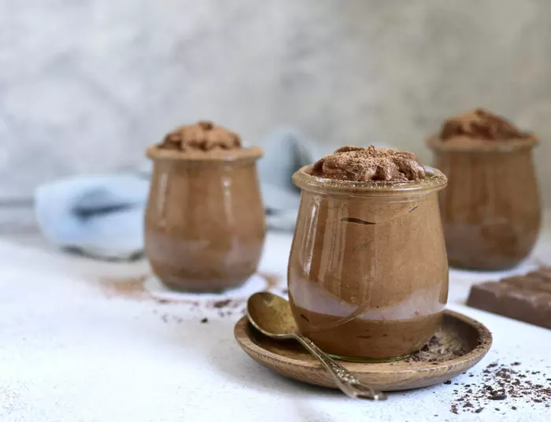

Mousse de cicolata

Reteta Mousse
Mousse-ul este un desert cu consistență moale, care încorporează mult aer în compoziție, care îi dă o textură ușoară. Cele mai celebre arome folosite la mousse sunt ciocolata, vanilia, cafeaua, caramelul și fructele.
Când faci mousse de ciocolată, este bine să alegi o ciocolată neagră de bună calitate. Conținutul de cacao este și el important. Dacă are mai puțin de 70%, crema se va lichefia. Dacă are peste 90%, va deveni ca o budincă.
- 330 g ciocolată neagră cu cel puțin 70% cacao
- 375 ml smântână lichidă pentru frișcă cu cel puțin 30%
- 20 g zahăr alb
- 20 g zahăr pudră
- 90 ml apă fierbinte
- 3 ouă
Pasi
- Smântâna se toarnă într-un bol și peste ea se pune ciocolata.
- Bolul se pune pe bain-marie și se amestecă până când ciocolata se topește.
- Odată obținut ganache-ul de ciocolată, se ia de pe foc. Se toarnă treptat apa fierbine, mixând tot timpul.
- Ouăle se separă. Gălbenușurile se amestecă cu zahărul pudră, până consistența aduce aminte de o cremă.
- Crema de gălbenușuri se toarnă peste amestecul de ciocolată și se amestecă foarte repede, pentru a nu se coagula gălbenușul de ou.